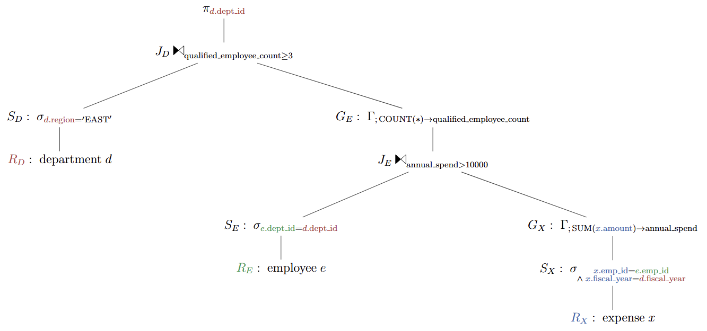
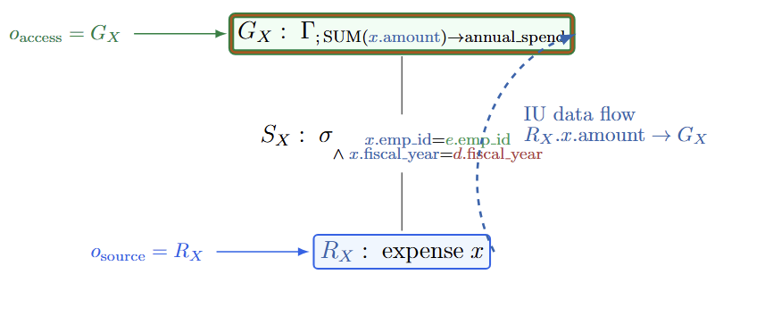
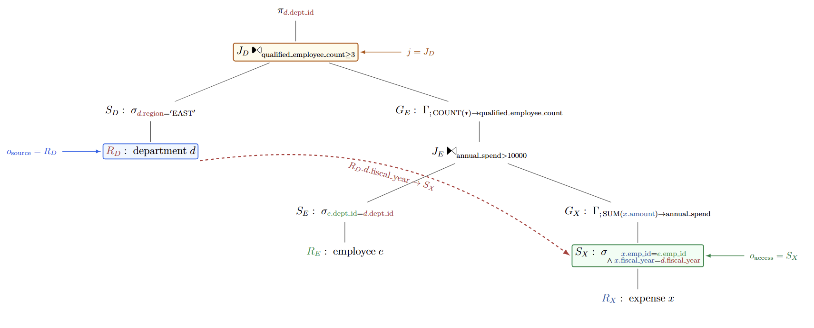

1. 先拆开三个常被混用的概念
这里的三件事位于不同层次。先分层，后面的 LCA 与改写才不会被误读成“给表建一个索引就能消除子查询”。
| 概念 | 它索引或改变什么 | 本页中的职责 | 不是什么 |
|---|---|---|---|
| Indexed Algebra | 查询计划及其 information unit（IU）数据流；动态维护“定义在哪里、引用在哪里、路径在哪里”等辅助索引。 | 快速回答 source、consumer、LCA 和路径问题，为识别 accessing 提供分析信息。 |
不是 B-tree，不是 tuple lineage，不是 provenance，也不是 unnesting rewrite。 |
| data index | 表数据，例如 B-tree、hash index 或 bitmap index。 | 帮助扫描、点查或连接访问数据。 | 不描述计划中一个 IU 从哪个算子流到哪个表达式。 |
| Holistic Unnesting | 含 dependent join 的关系代数计划。 | 自顶向下携带状态，整体改写多层相关性，最终生成普通 join/group-by 计划。 | 不是索引结构，也不是列血缘查询接口。 |
题名与章节名不要互换
2025 论文的题名是 Improving Unnesting of Complex Queries；Holistic Query Unnesting 只是该论文的 §3。本文为了聚焦而沿用章节名，但不把它虚构成论文题名。
一句话分工：Indexed Algebra 让优化器更快地看清计划；Holistic Unnesting 根据这些事实改写计划；data index 则在执行时帮助算子访问表数据。
2. 一条贯穿全文的两层相关聚合
目标是找出 EAST 区域中，某财政年度至少有三名员工全年报销总额超过 10000 的部门。内层 SUM 同时引用员工层与部门层，外层 COUNT 又依赖部门绑定，因此正好暴露两层相关性。
SELECT d.dept_id
FROM department AS d
WHERE d.region='EAST'
AND (SELECT COUNT(*) FROM employee AS e
WHERE e.dept_id=d.dept_id
AND (SELECT SUM(x.amount) FROM expense AS x
WHERE x.emp_id=e.emp_id
AND x.fiscal_year=d.fiscal_year)>10000)>=3;主线数据约束
本例把业务键 dept_id、emp_id、fiscal_year 及对应相关列都设为 NOT NULL；(dept_id,fiscal_year) 是唯一的部门年度绑定，emp_id 唯一标识员工。这样可以先专注于绑定传播；一般情况下的 NULL-safe 回接在“语义边界”一节单独处理。
2.1 三张输入表
department
| dept_id | region | fiscal_year |
|---|---|---|
| D10 | EAST | 2025 |
| D20 | EAST | 2025 |
| D30 | WEST | 2025 |
employee
| emp_id | dept_id |
|---|---|
| e1 | D10 |
| e2 | D10 |
| e3 | D10 |
| e4 | D10 |
| e5 | D20 |
| e6 | D20 |
| e7 | D30 |
expense
| expense_id | emp_id | fiscal_year | amount |
|---|---|---|---|
| x01 | e1 | 2025 | 6000 |
| x02 | e1 | 2025 | 5001 |
| x03 | e1 | 2024 | 9000 |
| x04 | e2 | 2025 | 8000 |
| x05 | e2 | 2025 | 3000 |
| x06 | e3 | 2025 | 7000 |
| x07 | e4 | 2025 | 10001 |
| x08 | e5 | 2025 | 12000 |
| x09 | e6 | 2025 | 9000 |
| x10 | e7 | 2025 | 20000 |
2.2 先手算结果
按部门年度与员工分组后，内层标量聚合得到下面的年度费用。e1 的 2024 费用不属于 d.fiscal_year=2025，因此不计入。
| dept_id | fiscal_year | emp_id | SUM(amount) | > 10000 |
|---|---|---|---|---|
| D10 | 2025 | e1 | 11001 | 是 |
| D10 | 2025 | e2 | 11000 | 是 |
| D10 | 2025 | e3 | 7000 | 否 |
| D10 | 2025 | e4 | 10001 | 是 |
| D20 | 2025 | e5 | 12000 | 是 |
| D20 | 2025 | e6 | 9000 | 否 |
| D30 | 2025 | e7 | 20000 | 是，但部门不在 EAST |
| dept_id | region | fiscal_year | 费用 > 10000 的员工数 | >= 3 |
|---|---|---|---|---|
| D10 | EAST | 2025 | 3（e1、e2、e4） | 是 |
| D20 | EAST | 2025 | 1（e5） | 否 |
| D30 | WEST | 2025 | 1（e7） | 先被 region 过滤 |
最终输出：D10
2.3 规范代数树：先保留相关性
R_D/R_E/R_X 是三张表的 scan operator，S_D/S_E/S_X 是各自上方的 selection operator，G_E 与 G_X 是两层 group-by operator；J_D 与 J_E 是两层 dependent join。每个名字只指一个真实算子。这里先忠实表示 SQL 语义，还没有做 unnesting。

π[d.dept_id]
└─ σ[qualified_employee_count >= 3]
└─ J_D dependent join
├─ S_D := σ[d.region = 'EAST']
│ └─ R_D := scan(department d)
└─ G_E := γ[∅; COUNT(*) → qualified_employee_count]
└─ σ[annual_spend > 10000]
└─ J_E dependent join
├─ S_E := σ[e.dept_id = d.dept_id]
│ └─ R_E := scan(employee e)
└─ G_X := γ[∅; SUM(x.amount) → annual_spend]
└─ S_X := σ[x.emp_id = e.emp_id
∧ x.fiscal_year = d.fiscal_year]
└─ R_X := scan(expense x)∅ 表示未 unnest 时的 static aggregate：每次在当前外层绑定下算一行，绑定列还不是 group keys；它们是在改写返回路径上加入的。关键观察是 S_E 读取部门绑定，而 S_X 同时读取员工绑定与跨过一层的部门年度绑定。
3. Indexed Algebra 到底给计划加了什么
Indexed Algebra（IA）把计划看成算子树与显式 IU 数据流的组合。它的价值不是改变关系代数语义，而是让计划在持续改写时仍能高效回答结构查询。
| 术语 | 工作定义 | 运行例 |
|---|---|---|
| operator | 计划中的算子节点；拥有零个或多个计划 child，并承载表达式。 | R_D scan、S_E selection、G_X group by、J_D。 |
| expression | 算子内部的谓词、映射、分组键或聚合参数，会引用 IU。 | e.dept_id=d.dept_id、SUM(x.amount)。 |
| information unit（IU） | 计划中的一个命名信息项，常对应列或中间表达式结果；每个 IU 有且仅有一个 source，可以有多个 consumer。 | d.fiscal_year 由 R_D 定义，却可被 S_X 引用。 |
| source | 定义并输出某 IU 的唯一 source operator。 | R_D 定义 d.dept_id 与 d.fiscal_year。 |
| consumer | 引用 IU 的表达式；同一 IU 可以流向多个 consumer。 | d.fiscal_year 被费用侧年度谓词消费。 |
3.1 两种边不要画成一种边
计划 parent/child 边（执行结构）
J_D
├─ S_D
│ └─ R_D
└─ ... J_E
├─ S_E
│ └─ R_E
└─ G_X
└─ S_X
└─ R_X
IU source → consumer operator 链接（数据流）
R_D.d.region ─────────→ S_D
R_D.d.dept_id ─────────→ S_E
R_D.d.dept_id ─────────→ π[d.dept_id]
R_D.d.fiscal_year ─────────→ S_X
R_E.e.dept_id ─────────→ S_E
R_E.e.emp_id ─────────→ S_X
R_X.x.emp_id ─────────→ S_X
R_X.x.fiscal_year ─────────→ S_X
R_X.x.amount ─────────→ G_X
G_X.annual_spend ─────────→ J_E
G_E.qualified_employee_count ─────────→ J_Dparent/child 边说“哪个算子以哪个子计划为输入”；source→consumer operator 链接说“哪个算子中的表达式读取了由何处定义的 IU”。相关引用恰恰会让后一种链接跨越 sibling branch，因此不能只沿计划 child 指针猜列来源。
动态树只当黑盒使用
IA 可在计划改写期间用 link/cut tree 一类动态树结构维护计划，从而支持 LCA 与路径查询，摊还复杂度为 O(log n)；本文只把它作为提供这些查询的黑盒。
4. 用 LCA 找到“谁负责绑定”
对一次 IU 引用，记访问该 IU 的算子为 o_access，定义该 IU 的算子为 o_source。识别阶段计算：
本地或正常向上的数据流
若 source 位于 consumer 的输入子树里，o_access 本身就是两条路径第一次相遇的位置，所以 j = o_access。这不是相关访问，不标 dependent join。
跨另一个分支的数据流
若 j != o_access，source 不在 consumer 的本地输入子树中；引用跨过了另一个分支。在良构的相关查询计划里，这个 j 就是负责提供绑定的 dependent join。

j = o_access。source 位于 consumer 的输入子树中，这是普通的本地数据流。4.1 逐步看一个跨分支引用
以 S_X 中的 d.fiscal_year 为例：
o_access = S_X，因为费用侧年度谓词在这里读取d.fiscal_year。o_source = R_D，即部门侧产生该 IU 的位置。- 从
S_X向根走，会经过G_X、J_E与G_E再到J_D；从R_D向根走，则先经过它的 parentS_D，再到J_D。 - 两条路径第一次相遇于
J_D，所以LCA(S_X,R_D)=J_D。 - 因为
J_D != S_X，把S_X加入accessing(J_D)。

j != o_access。source 与 consumer 位于不同分支，最低公共祖先 J_D 负责提供部门绑定。访问路径：S_X ─────→ ... ──→ J_D ──→ root
来源路径：R_D ──→ S_D ─────→ J_D ──→ root
↑
第一个公共祖先4.2 为什么不能只比较两个算子是否相等
即使是完全本地的数据流，定义列的 scan 与使用列的 selection 通常也是两个不同算子，因此 o_access != o_source 很常见，却不代表相关性。单纯比较身份也无法说出 source 是在 consumer 下方，还是在 sibling branch。LCA 同时编码了路径位置与跨分支边界，得到的 j 才能直接指向负责绑定的 dependent join。
5. 把每个引用归到 accessing 集合
本表严格按真实 operator 计算每个引用：R_D/R_E/R_X 是唯一 source operator；S_E/S_X 消费谓词 IU；G_X 消费聚合参数 x.amount。这些名字不是新增关系，也不把多个 operator 合并成“表达式区域”。
| consumer / 表达式 | 引用 IU | IU source | LCA 结果 | 处理 |
|---|---|---|---|---|
S_E: e.dept_id=d.dept_id |
d.dept_id |
R_D |
J_D |
标记：S_E ∈ accessing(J_D) |
S_X: x.fiscal_year=d.fiscal_year |
d.fiscal_year |
R_D |
J_D |
标记：S_X ∈ accessing(J_D) |
S_X: x.emp_id=e.emp_id |
e.emp_id |
R_E |
J_E |
标记：S_X ∈ accessing(J_E) |
S_E 本地谓词 |
e.dept_id |
R_E |
S_E（等于 consumer） |
不标记 |
S_X 本地谓词 |
x.emp_id |
R_X |
S_X（等于 consumer） |
不标记 |
S_X 本地谓词 |
x.fiscal_year |
R_X |
S_X（等于 consumer） |
不标记 |
G_X 聚合参数 |
x.amount |
R_X |
G_X（等于 consumer） |
不标记 |
若某个 dependent join 的 accessing 为空，它的 RHS 没有真正读取 LHS 的 IU，可以直接普通化为相应的 ordinary join。反过来，非空集合告诉 Holistic 算法要沿哪些路径处理外层引用。
识别信息不等于等价性证明
Indexed Algebra 只提供 source、consumer、LCA、路径等分析信息；它不构造绑定域 D，也不替 Holistic 算法证明改写等价。没有 IA 时仍可用较慢的树遍历与列集合分析得到相同事实，正确性不依赖该索引。
设计划有 n 个算子、待检查的 IU 引用有 m 个。IA 下每个 LCA 查询摊还 O(log n)，因此这里只能把识别阶段写成 O(m log n)；不能把整个 unnesting、成本优化或执行过程笼统说成 O(log n)。
6. Bottom-up 为什么会先制造无效绑定
2015 算法按局部 dependent join 自底向上处理时，结果仍然正确；2025 论文指出的是某些深层嵌套形状的中间工作量。下面用两个很小的域把问题算清楚。
真实关系
T1(a) = {1,2}
T2(a,b) = {(1,x),(2,y)}
因此真实联合绑定 P = {(1,x),(2,y)}。
独立域相乘
D_a = {1,2}，D_b = {x,y}。
D_a × D_b 有四格；(1,y) 与 (2,x) 并不存在于真实绑定 P。
| a \ b | x | y |
|---|---|---|
| 1 | (1,x) ✓ | (1,y) 无效 |
| 2 | (2,x) 无效 | (2,y) ✓ |
6.1 聚合已经为四组付费
令内层输入为：
| T3.a | T3.b | v |
|---|---|---|
| 1 | x | 4 |
| 1 | x | 6 |
| 1 | y | 20 |
| 2 | x | 30 |
| 2 | y | 15 |
| 2 | y | 25 |
若中间计划先按 D_a × D_b 驱动内层聚合，就会先计算四组，再与 T2(a,b) 回接并过滤无效组合：
| 先计算的绑定组 | 参与 SUM 的 T3.v | SUM(v) | 与真实 P 回接后 |
|---|---|---|---|
| (1,x) | 4, 6 | 10 | 保留 |
| (1,y) | 20 | 20 | 过滤 |
| (2,x) | 30 | 30 | 过滤 |
| (2,y) | 15, 25 | 40 | 保留 |
正确性没有坏，成本已经发生
后续过滤会删掉 (1,y) 与 (2,x)，所以 2015 算法的结果是正确的。问题在于这两组已经进入 hash table、聚合状态或排序输入，消耗 CPU、内存与聚合输入带宽。嵌套更深时，多个独立绑定域可能继续连乘；即便最后都被谓词消掉，中间代价也不会自动退还。
7. 在运行例上追踪 Holistic 状态
识别阶段结束后，主算法按 top-down 顺序处理 dependent join。下表固定选择与最终 CTE 一致的显式 D 路径：cclasses 只记录谓词提供的候选等价关系；repr 只记录成本模型已经决定采用的 substitution。因为本次 trace 不选择 substitution，所以 repr 从头到尾都是 ∅。
| 顺序 / 节点 | accessing | outerRefs | cclasses | repr | 动作 |
|---|---|---|---|---|---|
| 0. 识别结束 | J_D:{S_E,S_X}J_E:{S_X} |
尚未启动 | ∅ |
∅ |
用 LCA 标出两个非平凡 dependent join。 |
1. 启动 J_D |
{S_E,S_X} |
{d.dept_id,d.fiscal_year} |
∅ |
∅ |
创建部门层 unnesting 状态，向 RHS 自顶向下推进。 |
2. 处理 J_E 左输入 S_E |
{S_E,S_X} → {S_X} |
{d.dept_id,d.fiscal_year} |
{{d.dept_id,e.dept_id}} |
∅ |
读取等值谓词，只把它加入候选等价类；当前访问完成，从父层集合移除 S_E，不创建代表映射。 |
3. S_E 左分支停止点 |
该分支 ∅；父状态仍待 {S_X} |
{d.dept_id,d.fiscal_year} |
{{d.dept_id,e.dept_id}} |
∅ |
选择显式插入 D_D := δ(π_{d.dept_id,d.fiscal_year}(S_D))。它利用 EAST 早过滤，并把部门与年度作为真实成对绑定带到 employee 分支。 |
4. J_E 转向右输入 |
子层 {S_X}；父层余项 {S_X} |
子层 {e.emp_id}父层 {d.dept_id,d.fiscal_year} |
子层 ∅；父层保留部门/员工等价类 |
∅ |
建立 child→parent 指针；把仍位于右侧的父层访问 S_X 合并进本轮，使一次下降同时处理员工与部门年度引用。 |
5. 到达 S_X |
子层与父层的两个访问原因均移除 | {e.emp_id}，以及继承的 d.fiscal_year |
{{d.dept_id,e.dept_id}, {e.emp_id,x.emp_id}, {d.fiscal_year,x.fiscal_year}} |
∅ |
把两个费用谓词加入候选等价类，使访问清空；此时仍未选择任何 substitution。 |
6. S_X 右分支停止点 |
∅ |
由显式联合绑定提供 | 保留三组候选等价类 | ∅ |
用 D_DE := δ(π_{d.dept_id,d.fiscal_year,e.emp_id}(D_D ⋈_{d.dept_id=e.dept_id} R_E)) 驱动 R_X。这个 combined domain 来自已发生的真实 employee join，不是独立部门域与员工域的笛卡尔积。 |
7. 返回 G_X 与 J_E |
∅ |
显式 d.dept_id,d.fiscal_year,e.emp_id |
候选关系保持可用 | ∅ |
用显式绑定列改写费用普通 join 的谓词，并把三键加入 G_X 的 group keys；annual_spend > 10000 原样保留。 |
8. 返回 G_E 与 J_D |
∅ |
显式 d.dept_id,d.fiscal_year |
候选关系无需转成 repr | ∅ |
按部门年度改写 G_E 的 group keys 与普通回接谓词；两个 dependent join 都普通化，得到 Section 9 的显式域计划。 |
7.1 parent state 的意义
处理 J_E 右侧时，S_X 不只读取当前员工层的 e.emp_id，还读取祖先部门层的 d.fiscal_year。若新建 child state 后忘掉 parent state，就会漏掉跨两层引用。本次选择虽显式加入 D_D，却不再独立构造一个员工域与它相乘；算法先让 D_D 与 R_E 发生真实的部门—员工连接，再从其结果形成 D_DE。parent 让右侧一次下降同时看到两层访问，并保住部门、年度与员工的从属关系。
不要把不同 D 盲目穿过 dependent join
dependent join 本身正表达“右侧取决于左侧当前绑定”。错误形状是先独立得到部门域和员工域，再把二者交叉后驱动 expense；chosen trace 则用 D_D ⋈ R_E 的真实可达组合形成 combined domain。Holistic 的关键不是取消 D，而是让父子状态保留层次，并在真正的访问停止点加入已经正确关联的绑定。
8. 到达访问终点后：显式 D，还是 repr 替换
当某条访问路径清空时，算法有两类等价实现选择。它们表达同一组逻辑绑定，但物理形状与过滤机会不同。Section 7 的 chosen trace 以及 Section 9 的最终 CTE 采用方案 A；方案 B 只是成本模型可以选择的另一条路径。
方案 A：显式加入绑定域 D（本次采用）
D := δ(πouterRefs(L))从 dependent join 左侧 L 投影所需外层引用并去重，再在停止位置把 D join 进来。对 J_D 而言，L=S_D 已含 region='EAST'，所以显式 D 可以把 EAST 的早期过滤保留下来，减少后续员工与费用输入。
代价是计划中多一个 distinct/domain 与 join，基数估计和物化成本也要纳入选择。
方案 B：substitution / repr（本次未采用）
若等价类中已经存在 RHS 产生的代表 IU，成本模型也可以把外层引用替换为代表列，而不显式加入 D。三条候选映射是：
d.dept_id → e.dept_ide.emp_id → x.emp_idd.fiscal_year → x.fiscal_year
这种计划通常算子更少、形状更接近普通 join/group-by；但如果显式 D 原本很有选择性，拿掉它也可能让更多行进入后续算子。
二者是语义等价实现与成本选择，不是“新算法永远选 substitution”。cclasses 中存在候选关系也不等于 repr 已经写入映射：本页 trace 明确保持 repr=∅。局部成本模型可以比较 distinct、join、过滤选择率与基数，但 Holistic Unnesting 本身并不保证得到全局最优计划。
9. 一个不含相关子查询的最终计划
为了让结果可直接运行，下面选择显式 binding_domain 的版本。filtered_department 保留原查询的外层行多重性，去重后的绑定域只驱动 RHS；随后用普通 join 与两层 group by 一次性计算所有绑定。
WITH filtered_department AS (
SELECT d.dept_id, d.fiscal_year
FROM department AS d
WHERE d.region = 'EAST'
),
binding_domain AS (
SELECT DISTINCT dept_id, fiscal_year
FROM filtered_department
),
employee_spend AS (
SELECT bd.dept_id,
bd.fiscal_year,
e.emp_id,
SUM(x.amount) AS annual_spend
FROM binding_domain AS bd
JOIN employee AS e
ON e.dept_id = bd.dept_id
JOIN expense AS x
ON x.emp_id = e.emp_id
AND x.fiscal_year = bd.fiscal_year
GROUP BY bd.dept_id, bd.fiscal_year, e.emp_id
),
qualified AS (
SELECT dept_id,
fiscal_year,
COUNT(*) AS qualified_employee_count
FROM employee_spend
WHERE annual_spend > 10000
GROUP BY dept_id, fiscal_year
)
SELECT fd.dept_id
FROM filtered_department AS fd
JOIN qualified AS q
ON q.dept_id = fd.dept_id
AND q.fiscal_year = fd.fiscal_year
WHERE q.qualified_employee_count >= 3;9.1 对应的普通 join/group-by 树
π[fd.dept_id]
└─ σ[qualified_employee_count >= 3]
└─ ⋈[q.dept_id = fd.dept_id
∧ q.fiscal_year = fd.fiscal_year]
├─ filtered_department
│ └─ σ[d.region='EAST'](department d)
└─ γ[dept_id,fiscal_year;
COUNT(*) → qualified_employee_count]
└─ σ[annual_spend > 10000]
└─ γ[bd.dept_id,bd.fiscal_year,e.emp_id;
SUM(x.amount) → annual_spend]
└─ ⋈[x.emp_id=e.emp_id
∧ x.fiscal_year=bd.fiscal_year]
├─ ⋈[e.dept_id=bd.dept_id]
│ ├─ binding_domain
│ │ └─ δ π[dept_id,fiscal_year]
│ │ └─ filtered_department
│ └─ employee e
└─ expense x9.2 三键是安全机械写法，不声称键最小
内层 SUM 携带 dept_id、fiscal_year、emp_id，可以不依赖 functional dependency（FD）推理，机械地保留“部门—年度—员工”完整绑定；外层 COUNT 再按 dept_id,fiscal_year 分组。由于本例已经声明 emp_id 唯一，FD-aware 的后续优化器可能证明某些 group key 可省；但通用 unnesting rewrite 不假定这些 FD，也不需要在保证语义时把 group keys 最小化。
| 原 SQL 语义 | 普通计划中的对应位置 |
|---|---|
d.region='EAST' | filtered_department 的 selection；binding_domain 再从中只去重 RHS 所需绑定。 |
e.dept_id=d.dept_id | employee 与 binding_domain 的普通 join。 |
x.emp_id=e.emp_id | expense 与员工绑定的普通 join。 |
x.fiscal_year=d.fiscal_year | 费用 join 同时携带部门年度键。 |
每名员工 SUM(x.amount)>10000 | 三键 group by 后过滤 annual_spend。 |
每部门 COUNT(*)>=3 | 部门年度 group by 后过滤 qualified_employee_count。 |
对本页数据，结果仍为 D10
10. 正确实现必须守住的语义边界
| 边界 | 准确口径 | 本例为何看起来简单 |
|---|---|---|
| NULL-safe 回接 | 论文的 IS 语义要求 NULL 作为可匹配的专门值；落到 SQL 时通常用 IS NOT DISTINCT FROM 回接 outer reference 与代表列，不能无条件换成普通 =。 |
主线关联键均为 NOT NULL，所以示例 SQL 中 = 足够；这不是通用证明。 |
D duplicate-free |
D := δ(πouterRefs(L)) 必须去重，相关下推等价式依赖这个性质。它只去重绑定域，不等于给最终查询加 DISTINCT。 |
binding_domain 用 SELECT DISTINCT 明示该要求；最终投影仍由未去重的 filtered_department 驱动，以保留外层 bag multiplicity。 |
| static aggregate 的空输入 | 无分组键的 COUNT/SUM 等静态聚合即使输入为空，也有“产生一行聚合结果”的 SQL 语义；通用改写可能需要 outer join 或 group join 来保住这行。 |
费用为空时，原查询的 SUM 为 NULL，NULL>10000 不成立。若某部门没有合格员工，原外层 COUNT(*)=0；qualified CTE 则没有该部门组。因为本查询的 0>=3 为 false，最终 inner join 同样排除该部门，所以这里仍等价；若谓词接受 0 或需要投影聚合值，就不能据此省略通用规则。 |
| IA 与正确性 | Indexed Algebra 是让 source/LCA/path 查询更快的性能基础设施，不是 unnesting 正确性的前提。 | 较慢的计划遍历、自由列集合与 source 映射同样可以识别相关访问。 |
| 识别条件的精确写法 | 课程 PPT 第 55 页写成 o1 != o2 不够严谨；论文需要的条件是 LCA(o_access,o_source) != o_access。 |
本地 scan 与 selection 本来就常是不同算子，直接比较身份会误报。 |
不要补写不存在的定理
本页只陈述论文给出的算法条件、等价改写边界与成本动机；它不把 IA 的复杂度、Holistic 的经验效果或某个教学例子包装成新的 theorem，也不声称 2015 方法产生错误结果。
11. 阅读地图与一页术语链
建议先把“计划索引如何回答 LCA”与“unnesting 如何使用分析结果”分开阅读，再回到 2015 的绑定域背景。页码按 PDF 页计。
| 顺序 | 材料 | 精读范围 | 带着什么问题读 |
|---|---|---|---|
| 1 | 2023 Indexed Algebra PDF | pp. 2–6，§2–§4.2 | operator、expression、IU、source/consumer 怎样组成可查询的数据流？动态计划怎样回答 LCA/路径？ |
| 2 | 2025 Improving Unnesting of Complex Queries | pp. 6–16，§2.3、§3.1–§3.3 | bottom-up 的无效域组合从哪里来？accessing 如何识别？outerRefs、parent、cclasses、repr 怎样协作？ |
| 3 | 2024 formalization | 定义、语义与等价改写部分 | 把教学直觉落回形式化的自由变量、dependent join 与等价条件，尤其检查 NULL 与多重集边界。 |
| 4 | 本地 2015 论文 | 作为绑定域与下推规则的背景回读 | D 为什么去重？何时保留 D、何时 substitution？为什么 2025 是改进中间计划，而不是推翻正确性？ |
11.1 一页总结
SQL 相关列引用
→ consumer expression 读取一个 IU
→ IU 的唯一 source 在哪里？
→ 计算 LCA(o_access, o_source)
→ 若 LCA != o_access，定位负责绑定的 dependent join
→ 汇总 accessing(join)
→ top-down 启动 outerRefs，并用 parent 保留嵌套层次
→ 从等值谓词积累 cclasses
→ 成本选择：显式 D 或 substitution/repr
→ 返回路径重写谓词、group keys 与回接条件
→ 得到只含 ordinary join/group-by 的计划最后只记一句
Indexed Algebra 回答“相关引用跨过了哪个计划边界”；Holistic Query Unnesting 利用这个答案，在保持父子绑定关系的前提下决定“在哪里加入 D，或用哪个 RHS 列替换 outer reference”。